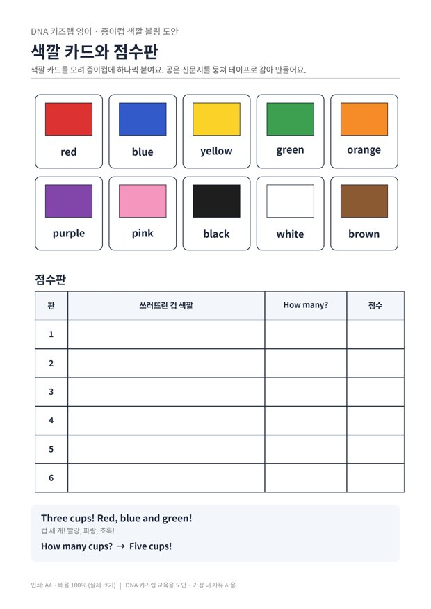

전체 단원 › 실험·활동 › 3~4학년 영어
종이컵 색깔 볼링

색깔 카드를 붙인 종이컵을 신문지 공으로 쓰러뜨리고, 쓰러진 컵의 색과 개수를 영어로 외쳐요.
30분 · 난이도 ★☆☆ 쉬움
준비물
- 종이컵 10개 — 다 쓴 종이컵이나 요구르트병
- 신문지 공 — 신문지나 이면지를 뭉쳐 테이프로 감아요
- 색깔 카드 도안 — 색깔 10장과 점수판 (A4 1장)
- 테이프, 가위 — 카드를 컵에 붙여요
하는 방법
- 핀 만들기
색깔 카드를 오려 종이컵에 하나씩 붙이고, 컵을 엎어서 1-2-3-4 삼각형으로 세워요. - 공 굴리기
2~3m 떨어진 곳에서 신문지 공을 굴려요. - 색깔 외치기
쓰러진 컵을 하나씩 들며 색깔을 외쳐요. "Red! Blue! Green!" - 개수 세고 기록하기
"How many cups?" 하고 물으면 영어로 세어 대답해요. 점수판에 색깔과 개수를 적고, 다섯 판을 모아 이긴 사람을 정해요.
몸을 움직이며 말하면 낱말이 훨씬 오래 기억에 남아요. 볼링처럼 신나는 놀이에서는 아이가 영어를 '공부'가 아니라 '게임 규칙'으로 받아들여 부담 없이 말하게 됩니다. 점수를 매길 때 영어 숫자를 꼭 함께 말해 주세요.